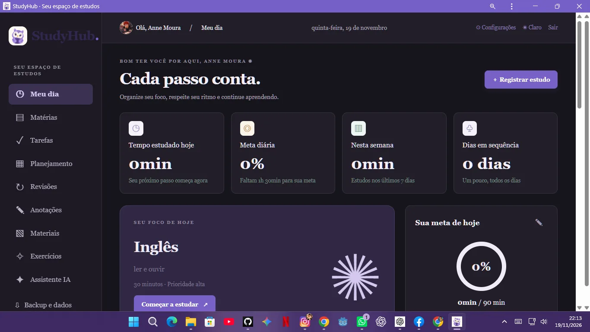
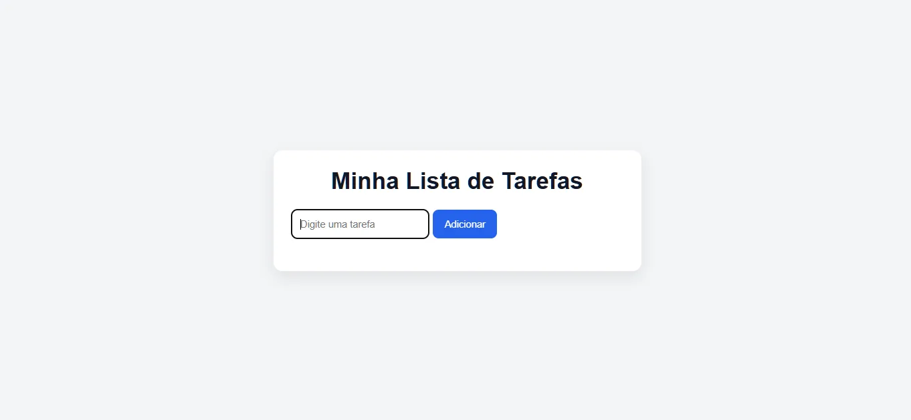
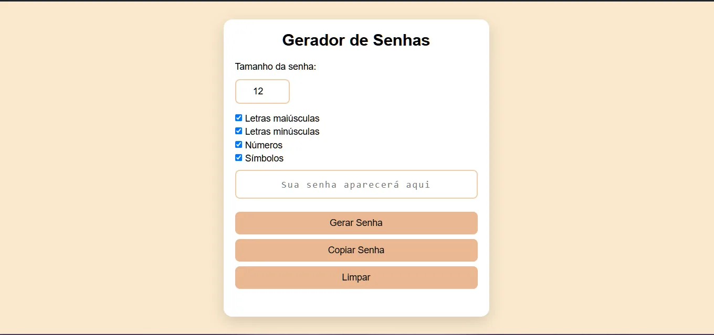
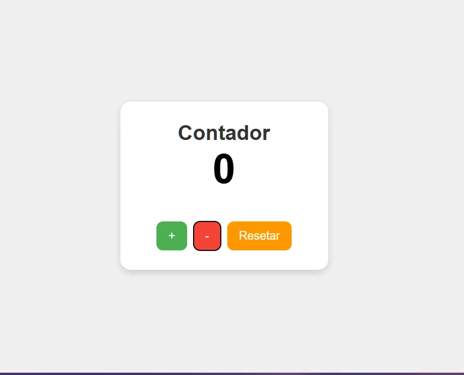

PROJETO AUTORALEM DESENVOLVIMENTO
StudyHub
Plataforma de estudos com organização acadêmica, biblioteca de materiais e assistente de IA. Projeto autoral em evolução, com versão web de demonstração.
Demonstração Código-fonte privado
PORTFÓLIO / PROJETOS
Aqui reúno aplicações e exercícios que fazem parte da minha evolução em desenvolvimento web e programação.

PROJETO AUTORALEM DESENVOLVIMENTO
Plataforma de estudos com organização acadêmica, biblioteca de materiais e assistente de IA. Projeto autoral em evolução, com versão web de demonstração.
 LANDING PAGE
LANDING PAGE
ORGANIZAÇÃO DE TAREFAS
GERAÇÃO DE SENHAS
CONTADOR INTERATIVOTEM UMA IDEIA?